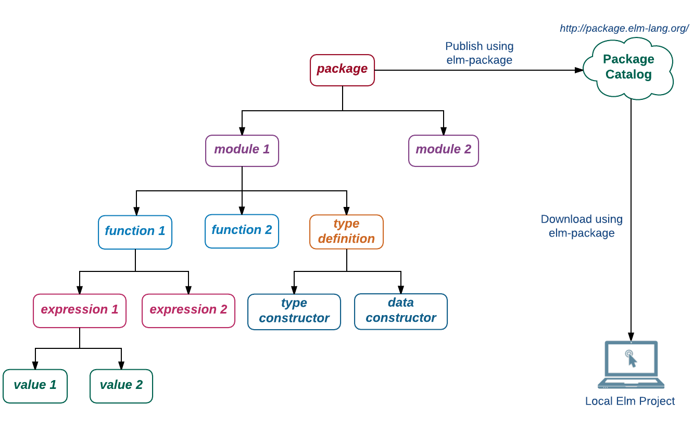
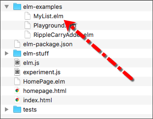
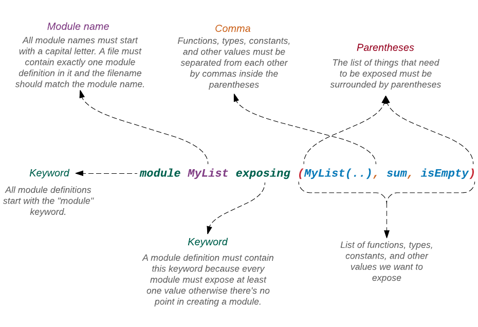
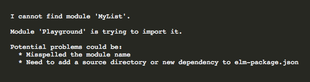
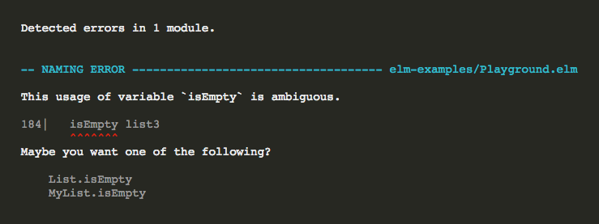
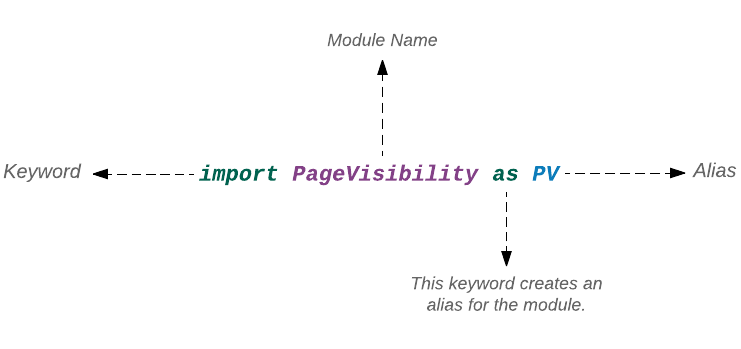
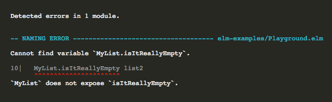

Softwérový program je jako živý organismus. Je-li poprvé uveden do digitálního světa, je útloučký. Může obsahovat několik málo funkcí, které řeší problém s úzkým rozsahem. Potom počne růst, funkce za funkcí. Než se stačíme nadát, stane se obludou s monstrózní složitostí řešení problémů.
Je snadné číst a měnit malý program. Jak se ale program rozroste do tisíců kódových řádků, je těžké mu rozumět a jej spravovat bez dobré organizační struktury. Některé z dříve probíraných vlastností Elmu, jako je neměnitelnost, čisté funkce, testování a typový systém - nám pomáhají psát robustní programy ale neumožňují nám organizovat kód udržitelným způsobem. Elm poskytuje tři další útvary, které jsou specielně navrženy pro lepší organizací kódu: moduly, pakety a Elm Architecture. Elm Architecture bude popsána v kapitole 5. V této sekci vysvětlíme zbývající dva systémy.

Pojem value (hodnota) je nejzákladnějším konceptem v Elmu. 1, a, "Hannibal", [ 1, 2, 3 ] jsou všechno hodnoty. Výraz nám umožňuje spočítat hodnotu seskupením jiných hodnot, operátorů a konstant. 3 * x + 5 * y + 10 je výraz. Můžeme dokonce použít procedury if, case a let ke spojení více výrazů a jejich provedení, pokud jsou splněny jisté podmínky. Jak píšeme více a více výrazů, nevyhnutelně chceme některé z nich opakovaně použít na více místech. K tomu nám slouží funkce, které zapouzdří několik výrazů dohromady a připojí jméno, vyjadřující jejich účel.
Jak náš program roste, roste také složitost naší datové struktury. Abychom byli schopni snadno popsat složité datové struktury, potřebujeme nejprve definovat vztahy mezi rozdílnými druhy používaných hodnot zavedením jejich typů. Jak roste počet funkcí a definic typů, potřebujeme je začít seskupovat do modulů, řešících podobné úlohy. Modul je v podstatě kolekce funkcí, konstant, typových definicí a jiných hodnot, které mohou být opakovaně použity v různých kontextech. Na příklad, všechny funkce, které provádějí jistý druh operací se seznamem hodnot, jsou seskupeny do modulu s názvem List. Můžeme dokonce chtít spojit několik modulů, které řeší podobné problémy, do paketu (package). Na příklad v paketu Html jsou seskupeny různé moduly, které poskytují funkcionalitu pro psaní a manipulaci kódu HTML. Paket můžeme sdílet s ostatními programátory jeho publikováním v online katalogu.
V této knize jsme již několik modulů vytvořili, aniž bychom věděli, jak ve skutečnosti pracují. V této sekci se pokusíme pochopit syntaxi při vytváření nových modulů a jejich importování do jiných modulů. Přitom se seznámíme s nejlepšími postupy, které zajistí lepší udržovatelnost kódu v našich modulech.
Vytvoření modulu
V sekci Recursive Types jsme vytvořili vlastní datovou strukturu MyList, která vypadala skoro stejně jako vestavěný typ List.
type MyList a
= Empty
| Node a (MyList a)Bohužel jsme v našem typu MyList nemohli použít žádnou z funkcí, definovanou v modulu List, protože všechny tyto funkce očekávají seznam typu List. Přepišme funkci z modulu List tak, aby také pracovala s typem MyList. Zdrojový kód standardní knihovny Elmu je volně přístupný. Můžeme si z něj vyčíst, jak jsou uvedeny funkce v modulu List. Zde je originální znění funkce List.isEmpty:
isEmpty : List a -> Bool
isEmpty xs =
case xs of
[] ->
True
_ ->
FalseZdrojový kód všech modulů z paketu Core lze nalézt ZDE.
Docela jednoduché, není-liž pravda? Je-li seznam prázdný, vrací fukce hodnotu True, v opačném případě vrací False. Přepracujme funkci isEmpty tak aby pracovala také s typem MyList. Než tak učiníme, potřebujeme nejprve vytvořit modul. Vytvořte soubor s názvem MyList.elm v adresáři beginning-elm/elm-examples.

Do souboru MyList.elm přidejme následující kód.
module MyList exposing (MyList(..), sum, isEmpty)
type MyList a
= Empty
| Node a (MyList a)
sum : MyList Int -> Int
sum myList =
case myList of
Empty ->
0
Node intValue remainingNodes ->
intValue + sum remainingNodes
isEmpty : MyList a -> Bool
isEmpty xs =
case xs of
Empty ->
True
_ ->
FalseVytvořili jsme modul s názvem MyList, který obsahuje definici typu MyList a dvou funkcí: sum a isEmpty. V sekci Rekurzivní typy jsme již MyList a sum v souboru Playground.elm definovali. Nyní, když máme samostatný modul, který bude obsahovat všechen kód, vztahující se k typu MyList, má smysl přemístit jej do souboru MyList.elm. Nezapomeňte definice typuMyList a funkce sum ze souboru Playground.elm odebrat.
Již víte, jak MyList a sum pracují. Pokud ne, osvěžte si paměť opětovným přečtením odstavce Rekurzivní typy. Funkce isEmpty je adaptace funkce List.isEmpty. Jediným rozdílem mezi naší adaptací a originálem Elmu je to, že my pro prezentaci prázdnoty používáme slovo Empty, zatímco Elm používá [].
Je úplně v pořádku použít stejné jméno pro modul i typ. S tuto praxí se budete opětovně setkávat u mnoha modulů, které Elm poskytuje, jako jsou Array, Html a Task. Elm nám ovšem nedovolí mít dva moduly nebo typy stejného jména.
Entity MyList, sum a isEmpty nejsou přístupné mimo modul, v němž jsou definovány, ledaže je "exponujeme". Expozice entity je přímočará. Vložíme její jméno mezi závorky za klíčové slovo exposing. Expozice modulu však vyžaduje připojení (..) k názvu typu. Přidáním (..), žádáme Elm aby rovněž exponoval datové konstruktory Empty a Node.

Import modulu
Abychom byli schopni používat funkci isEmpty mimo modul MyList, potřebujeme importovat modul, který ji obsahuje. Importujme modul MyList do souboru Playground.elm hned pod řádkem, který importuje modul Bitwise.
module Playground exposing (..)
.
.
import Bitwise
import MyListMůžeme si ověřit, zda náš modul MyList byl úspěšně importován načtením modulu Playground do prohlížeče. V adresáři beginning-elm spusťte elm-reactor a přejděte na stránku http://localhost:8000/elm-examples/Playground.elmv prohlížeči. Nevidíte-li žádnou chybu, znamená to, že byl modul úspěšně importován. Pokud však vidíte následující chybu, ujistěte se, že je adresář elm-examples přidán k seznamu source-directories v souboru beginning-elm/elm-package.json.

{
.
.
"source-directories": [
".",
"elm-examples"
],
.
.
}Nyní jsme již připraveni použít funkci isEmpty v modulu Playground. Přidejte následující dvě konstanty hned nad funkci main v souboru Playground.elm.
list1 : MyList.MyList a
list1 =
MyList.Empty
list2 : MyList.MyList number
list2 =
MyList.Node 9 MyList.Empty
main =
...Přidejte funkci isEmpty do funkce main, abychom zjistili, zda je seznam list1 prázdný či nikoliv.
main : Html.Html msg
main =
MyList.isEmpty list1
|> toString
|> Html.textObnovíte-li stránku na http://localhost:8000/elm-examples/Playground.elm, měli byste vidět "True". Aplikujme funkci isEmpty na seznam list2 abychom zkontrolovali druhý seznam.
main : Html.Html msg
main =
MyList.isEmpty list2
|> toString
|> Html.textObnovíte-li stránku na http://localhost:8000/elm-examples/Playground.elm, měli byste vidět "False". Vytvoření seznamu je nyní poněkud zdlouhavější ve srovnání se tím, jak jsme jej vytvářeli v odstavci Rekurzivní typy.
-- Dříve
Node 9 Empty
-- Nyní
MyList.Node 9 MyList.EmptyDůvod, proč musíme uvozovat slova Node a Empty názvem modulu MyList je ten, že MyList je nyní používán uvnitř jiného zdrojového kódu místo v replu. Dříve, když jsme do replu importovali modul Playground, použili jsme za klíčovým slovem exposing označení (..), označující, že vše uvnit modulu je exponováno (připraveno k importu).
> import Playground exposing (..)To nám umožňovalo vypustit prefix MyList a použít datové konstruktory přímo. Abychom mohli vypustit prefix také v souboru Playground.elm, potřebujeme tento typ explicitně exponovat při importu modulu. Přidejte exposing (MyList(..)) na konec řádku, který importuje typ MyList v souboru Playground.elm.
module Playground exposing (..)
.
.
import Bitwise
import MyList exposing (MyList(..))Všimněte si, že syntaxe pro expozici typu (či jakékoli jiné hodoty) v modulu je přesně stejná jako expozice, použitá v modulu, ve kterém byl typ vytvořen.
module MyList exposing (MyList(..), sum, isEmpty)
type MyList a
= Empty
| Node a (MyList a)
.
.Nyní se můžeme zbavit prefixů v souboru Playground.elm.
.
.
list1 : MyList a
list1 =
Empty
list2 : MyList number
list2 =
Node 9 Empty
main : Html.Html msg
main =
MyList.isEmpty list2
|> toString
|> Html.textObnovíte-li stránku na http://localhost:8000/elm-examples/Playground.elm, měl byste stále vidět "False". Mohli jsme rovněž odstranit prefix MyList z anotace typu, když jsme nyní explicitně exponovali do té doby prefixovaný typ.
-- Before
list1 : MyList.MyList a
-- Now
list1 : MyList aA co MyList.isEmpty uvnitř main? Můžeme se zde také zbavit prefixu? Jistě. Jenom přidejte název isEmpty do seznamu exponovaných hodnot v souboru Playground.elm.
module Playground exposing (..)
.
.
import MyList exposing (MyList(..), isEmpty)
.
.
list1 : MyList a
list1 =
Empty
list2 : MyList number
list2 =
Node 9 Empty
main : Html.Html msg
main =
isEmpty list2
|> toString
|> Html.text
Jedinou neexponovanou entitou do modulu Playground zůstává funkce sum. Exponujme ji tedy také. Přidejte sum do seznamu exponovaných entit v souboru Playground.elm.
import MyList exposing (MyList(..), sum, isEmpty)V této chvíli jsme exponovali všechny hodnoty z modulu MyList. Místo exponování každé entity zvlášť, můžeme použít zkratku (..) exponující vše v modulu.
module Playground exposing (..)
.
.
import MyList exposing (..)Zkratku (..) jste viděl v knize na různým místech. Nyní víte, co znamená. Tato syntaxe se také používá při deklaraci modulu v souboru.
module MyList exposing (..)
.
.V této chvíli však nemusíte nahradit zkratkou (..) vše za slovem exposing v definici modulu MyList. Jsme-li v tom zkracování, můžeme se také zbavit prefixu Html expozicí funkce text a typu Html v souboru Playground.elm takto:
module Playground exposing (..)
import Html exposing (Html, text)
.
.
main : Html msg
main =
isEmpty list2
|> toString
|> textFunkce toString je obsažena v modulu Basics, jenž je automaticky importován Elmem do každého souboru. Proto ji můžeme použít bez prefixu, i když jsme modul Basics explicitně do souboru Playground.elm neimportovali.
Kvalifikovaný vs nekvalifikovaný import
Co se stane, když chceme uvnitř souboru Playground.elm použít také funkci isEmpty z modulu List? Vyzkoušejme to. Importujte modul List a přidejte další konstantu list3 hned nad funnkci main. Potom aplikujte funkci isEmpty na list3 v main takto:
module Playground exposing (..)
.
.
import MyList exposing (..)
import List exposing (isEmpty)
.
.
list1 : MyList a
list1 =
Empty
list2 : MyList number
list2 =
Node 9 Empty
list3 : List a
list3 =
[]
main : Html msg
main =
isEmpty list3
|> toString
|> textObnovíte-li stránku na http://localhost:8000/elm-examples/Playground.elm, uvidíte následující chybové hlášení:

Elm je zmaten. Neví které isEmpty použít, protože jsme je exponovali jak z modulu List, tak z modulu MyList. To je stinná stránka exponování hodnot při importování modulu. Abychom tuto potíž vyřešili, musime říci přesně, které isEmpty chceme použit. Prefixujte isEmpty názvem modulu List ve funkci main.
main : Html msg
main =
List.isEmpty list3
|> toString
|> textObnovte stránku na http://localhost:8000/elm-examples/Playground.elm. Chyba by měla být pryč.
- Kvalifikovaný import
- Když importujeme modul bez expozice čehokoliv, říkáme tomu kvalifikovaný import. To znamená, že musíme prefixovat všechny funkce, typy, konstanty a jiné hodnoty názvem modulu.
-- Qualified Imports
import Html
import MyList
list2 : MyList.MyList number
list2 =
MyList.Node 9 MyList.Empty
main : Html.Html msg
main =
MyList.isEmpty list2
|> toString
|> Html.text- Nekvalifikovaný import
- Když explicitně (jmenovitě nebo zkratkou) exponujeme hodnoty v deklaraci importu, nazývá se to nekvalifikovaný import, což znamená, že nemusíme žádný prefix uvádět.
-- Unqualified Imports
import Html exposing (Html, text)
import MyList exposing (..)
list2 : MyList number
list2 =
Node 9 Empty
main : Html msg
main =
isEmpty list2
|> toString
|> textPsaní kódu s nekvalifikovaným importem je příjemně stručné ale je to také nebezpečné, jak jsme viděli výše při střetu jmen. Měli bychom dávat přednost kvalifikovanému importu před nekvalifikovaným? Toť otázka. Nejlepší přístup je používat kvalifikovaný import implicitně. Nejen proto, že se vylučují chyby ze střetu jmen ale také proto, že tento import má také určitý dokumentační význam. Když vidíme kód psaný nekvalifikovaným stylem, jako tento:
import Html exposing (Html, text)
import List exposing (isEmpty)
import MyList exposing (..)
import SomeOtherModule exposing (..)
main : Html msg
main =
isEmpty list2
|> toString
|> textnení zřejmé, odkud funkce isEmpty pochází a co dělá. Pochází z modulu List, MyList nebo SomeOtherModule? Použijeme-li kvalifikovaný styl, víme přesně, odkud isEmpty příchází. Můžeme být dokonce schopni dedukovat co dělá podle místa svého původu.
import Html
import List
import MyList
import SomeOtherModule
main : Html.Html msg
main =
List.isEmpty list2
|> toString
|> Html.textNyní víme, že isEmpty určitě pochází z modulu List a zjišťuje, zda je seznam prázdný či nikoliv. Jsou ale situace, kdy použití nekvalifikovaného stylu činí náš kód přehlednější. V sekci Vytvoření webové stránky jsme napsali následující kód:
module BeginningElm exposing (..)
import Html exposing (..)
import Html.Attributes exposing (..)
view : a -> Html msg
view model =
div [ class "jumbotron" ]
[ h1 [] [ text "Welcome to Dunder Mifflin!" ]
, p []
[ text "Dunder Mifflin Inc. (stock symbol "
, strong [] [ text "DMI" ]
, text ") is a micro-cap regional paper and office
supply distributor with an emphasis on
servicing small-business clients."
]
]
main : Html msg
main =
view "dummy model"Jak vidíme, moduly Html a Html.Attributesjsou importovány nekvalifikovaným stylem. Důvod je ten, že tyto dva modulu obsahují rozdílné funkce. Možnost konfliktu názvu je zde tedy minimální. Navíc, názvy funkcí v těchto modulech velmi připomínají termíny z HTML, pročež je čtení kódu, který v Elmu reprezentuje HTML, docela intuitivní. Kdybychom výše uvedený kód zapsali kvalifikovaným stylem, byl by obtížně čitelný.
module BeginningElm exposing (..)
import Html
import Html.Attributes
view : a -> Html msg
view model =
Html.div [ Html.Attributes.class "jumbotron" ]
[ Html.h1 [] [ Html.text "Welcome to Dunder Mifflin!" ]
, Html.p []
[ Html.text "Dunder Mifflin Inc. (stock symbol "
, Html.strong [] [ Html.text "DMI" ]
, Html.text ") is a micro-cap regional paper and office
supply distributor with an emphasis on
servicing small-business clients."
]
]
main : Html msg
main =
view "dummy model"Rozhodnete-li se použít nekvalifikovaný styl, potom vám radím, abyste se omezili na jedno exposing (..) v souboru. U skupiny modulů, které se často používají společně, jako Html a Html.Attributes a kde je pravděpodobnost konfliktu názvů minimální, je bezpečné použít více než jeden exposing (..).
- Jména modulů s prefixem
- Všimli jste si, že modul
Html.Attributesmá ve svém názvu prefixHtml. Je to proto, že modul sídlí v paketu zvaném Html, jenž obsahuje i další moduly: -
- Html
- Html.Attributes
- Html.Events
- Html.Keyed
- Html.Lazy
-
Importujeme-li modul z paketu s více moduly, musíme jako prefix přidat název paketu - kromě případu, kdy je název modulu shodný s názvem paketu, jako u názvu
Html. V tom případě se název paketu stává částí názvu modulu. Jednou výjimkou z tohoto pravidla je paketCore. Moduly z tohoto paketu se při importu nepředsazují slovemCore.
Syntaxe AS
Je-li název modulu dlouhý, je psaní kódu kvalifikovaným stylem únavné a výsledný kód je zbytečně mnohoslovný. Elm má například modul PageVisibility, jehož jméno je poněkud delší než jména dosud použitých modulů. Prohlédněte si následující kód a soustřeďte se na místa, kde se vyskytuje PageVisibility appears.
import PageVisibility
type Msg =
VisibilityChanged PageVisibility.Visibility
update : Msg -> Model -> ( Model, Cmd Msg )
update msg model =
case msg of
VisibilityChanged PageVisibility.Visible ->
...
VisibilityChanged PageVisibility.Hidden ->
...
subscriptions : Model -> Sub Msg
subscriptions model =
PageVisibility.visibilityChanges VisibilityChangedTuto slovní tlačenici můžeme redukovat zavedením kratšího aliasu pro PageVisibility s použitím syntaxe as.
import PageVisibility as PV
type Msg =
VisibilityChanged PV.Visibility
update : Msg -> Model -> ( Model, Cmd Msg )
update msg model =
case msg of
VisibilityChanged PV.Visible ->
...
VisibilityChanged PV.Hidden ->
...
subscriptions : Model -> Sub Msg
subscriptions model =
PV.visibilityChanges VisibilityChangedVypadá to lépe, že? Je také zavedena dobrá rovnováha mezi stručností a popisností. Alias PVje mnohem stručnější než PageVisibility, avšak zároveň víme, odkud funkce visibilityChanges pochází.

Syntaxi as můžeme kombinovat s nekvalifikovaným importem takto:
import PageVisibility as PV exposing (visibilityChanges)Alias musí příjít před slovo exposing, jinak vyvolá Elm chybové hlášení.
-- This will throw an error
import PageVisibility exposing (visibilityChanges) as PVNebo můžeme import rozdělit do dvou řádků.
import PageVisibility as PV
import PageVisibility exposing (visibilityChanges)Privatizace funkcí
Psaní privátních funkcí v Elmu je snadné. Jednoduše je neexponujeme. Řekněme, že funkce isEmpty v modulu MyList deleguje určování prázdnosti seznamu jiné funkci a my nechceme, aby svět o tomto malém tajemství věděl. Přidejte novou definici funkce pod funci isEmpty v souboru MyList.elm
a přeneste na ni odpovědnost za určování prázdnoty.
module MyList exposing (MyList(..), sum, isEmpty)
.
.
isEmpty : MyList a -> Bool
isEmpty xs =
isItReallyEmpty xs
isItReallyEmpty : MyList a -> Bool
isItReallyEmpty xs =
case xs of
Empty ->
True
_ ->
FalseFunkce isItReallyEmpty je privátní, protože není přidána k seznamu exponovaných hodnot. Zkusme k ní přesto přístoupit v souboru Playground.elm a uvidíme, co se stane. Změňte obsah funkce main takto:
main : Html msg
main =
MyList.isItReallyEmpty list2
|> toString
|> Html.textObnovíte-li stránku na http://localhost:8000/elm-examples/Playground.elm, Elm vhodně poukazuje na to, že nezná funkci isItReallyEmpty.

Pokud jste tuto chybu nedostal, ujistěte se, že modul MyList neexponuje všechno. Jeho definice má vypadt takto:
module MyList exposing (MyList(..), sum, isEmpty)
.
.Abyste se zbavil chyby, nahraďte isItReallyEmpty funkcí isEmpty v hlavní funkci main.
main : Html msg
main =
MyList.isEmpty list2
|> toString
|> Html.textNejlepší vůbec je udržovat funkce jako privátní, pokud je nemusíte exponovat. Jakmile jsou jednou exponovány pro okolní svět, může být velmi riskantní je změnit. Upravujeme-li vstupní či výstupní formát funkce bez zpětné kompatibility, může klientský kód, který funkci používá, přestat pracovat. Je-li však funkce privátní, můžeme ji předělat bez obav, že někde rozhodíme nějaký kód.
Neznepokojujte se, zdá-li se vám seznam exponovaných hodnot v definici modulu příliš dlouhý. Většina modulů v Elmu exponuje dlouhý seznam hodnot. Zde je napříkad seznam hodnot v modulu List:
module List exposing
( isEmpty, length, reverse, member
, head, tail, filter, take, drop
, singleton, repeat, range, (::), append, concat, intersperse
, partition, unzip
, map, map2, map3, map4, map5
, filterMap, concatMap, indexedMap
, foldr, foldl
, sum, product, maximum, minimum, all, any, scanl
, sort, sortBy, sortWith
)Bohužel, elm-format v současnosti umisťuje každou exponovanou hodnotu na nový řádek, což není příliš šikovné. Doufejme, že se to v budoucnosti změní.
module List
exposing
( isEmpty
, length
, reverse
, member
, head
, tail
, filter
.
.
)Pro shrnutí, Elm velmi usnadňuje seskupování funkcí, konstant, definic typů a jiných hodnot s použitím modulů. Syntaxe pro vytváření a import modulů je přímočará. Můžeme rovněž sdílet své moduly s jinými programátory vložením do paketů a jejich publikováním v online katalogu. Několik dalších příkladů modulů uvidíme v kapitole, která popisuje Elm Architecture.